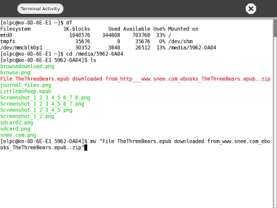

| Aperçu des Activités | Index | Réseaux et Internet |
Sugar offre de nombreuses manières d'utiliser un ordinateur au-delà de ce que l'écran affiche. Découvrez ici quelques idées pour utiliser Sugar sur votre XO au-delà des d'Activités installées par défaut, et en utilisant les Activités actuellement disponibles.
Vous pouvez installer un programme appelé "feh" pour afficher une succession d'images et offrir un diaporama.
Ce qu'il vous faut pour commencer:
yum install feh
feh -F -D 5 --scale-down /media/cardname/
où -F indique l'affichage en plein écran et -D 5 présente le diaporama avec une pause de 5 secondes entre les images.
Créez quelque chose d'artistique dans l'Activité Dessiner plutôt que de prendre des photographies puis utilisez l'Activité Enregistrer pour votre diaporama.
Créez une œuvre digitale ou une galerie de photographies avec tous vos ordinateurs, comme suspendues au mur ou présentées sur un chevalet.
Partagez des images en copiant des fichiers sur les clés USB ou les cartes SD d'autres étudiants.
Faites collaborer vos élèves dans l'Activité Dessiner en faisant dessiner chaque élève durant une minute sur une œuvre partagée en temps réel, comme ce que vous trouverez sur le site Swarm Sketch : http://swarmsketch.com/.
Faites télécharger à vos élèves des images concernant un thème en particulier ou utilisez la recherche par mot clé de certains sites, tels que http://flickr.com/ afin de créer un diaporama comportant uniquement des chats, des chiens ou d'autres animaux familiers.
Pensez à un endroit où pourrait être présenté un diaporama depuis l'ordinateur dans un but pratique, tel qu'une offre de publicité continue pour un magasin ou un restaurant.
Comment les élèves pourraient-ils créer un modèle économique pour la vente de publicités, en concevant des diaporamas et en les affichant comme s'ils étaient un panneau d'affichage ?
Faites créer à vos élèves des collages ou des mosaïques via des empilements d'écrans permettant ainsi de présenter simultanément les différents diaporamas sur les différents écrans.
Faites des recherches sur les paramètres de ligne de commande pour feh. Est-il possible de modifier la minuterie du diaporama afin que cet empilement d'images crée une image plus grande ?
Les élèves peuvent-ils utiliser leurs diaporamas pour convaincre quelqu'un d'acheter un produit ou de prendre une décision ?
Faits une vidéo de vos créations ou une galerie de vos photographies, ou racontez dans une entrée du Journal votre expérience sur le partage de photos ou de créations.
Lisez des livres stockés sur votre ordinateur ou sur Internet. Une des façons de lire un livre est d'ouvrir l'Activité Naviguer, de cliquer sur le lien livres, puis sur encyclopédie, livre d'images ou dictionnaires.
Sugar OS contient une bibliothèque qui offre beaucoup de choses à lire dans différentes langues. Ces livres électroniques sont appelés "ebooks" ou "e-livres" - comme "livres électroniques" -, et les fichiers "Portable Document Format" (PDF) sont un des formats pour les libres électroniques.
Si vous utilisez un XO, vous pouvez - si vous le désirez - pivoter l'écran du portable afin qu'il soit couché lorque vous lisez un ebook.
Pour voir un fichier PDF, il vous faut sélectionner son fichier dans l'Activité Naviguer ou dans le Journal, puis cliquer sur la touche flèches de direction pour que l'Activité Lire ouvre le fichier PDF en question.
L'Activité Lire et l'Activité Regarde & Ecoute sont deux activités qui ne sont pas présentées dans la Vue Accueil. Vous y accédez à travers une Activité de "lancement" telles que le Journal ou Naviguer.
Epub est un format de livre électronique (ebook) que vous pouvez lire sur votre ordinateur après avoir téléchargé et installé un lecteur tel que le FBReader puis en ayant téléchargé et stocké les fichiers epub que vous voulez lire. Pour terminter cette procédure, FBReader doit être installé.
Pour installer FBReader, connectez-vous à Internet, ouvrez l'Activité Terminal et saisissez:
su yum install fbreader
Puis appuyez enter, l'installateur téléchargera et installera alors FBReader. Vous pourrez ensuite télécharger quelques livres epub.
Pour télécharger et voir des livres epub, suivez cette procédure:
1. Démarrez l'Activité Naviguer.
2. Dans la barre d'adresse, saisissez http://www.snee.com/epubkidsbooks puis appuyez enter.
3. Faites dérouler jusqu'au livre que vous voulez télécharger puis cliquez sur son lien. Sugar affiche un compte à rebours pendant qu'il télécharge le fichier.
4. Allez sur l'Activité Journal en cliquant sur l'icône Journal en haut du Cadre.
5. Insérez une carte SD ou une clé USB dans le XO. Le Journal fait apparaître une icône dans la barre inférieure lorsque vous insérez un périphérique de stockage externe.
6. Localisez le fichier epub téléchargé mais ne cliquez pas dessus pour le lancer. Tirez le fichier depuis l'icône SD ou USB dans la barre inférieure.
7. Démarrez l'Activité Terminal.
8. Cliquez dans la fenêtre Terminal et trouvez le nom du medium de stockage externe ; celui-ci se trouve dans le répertoire /media. Par exemple, saisissez la commande :
df
9. Vous verrez le nom de votre carte SD ou de votre périphérique USB derrière la colonne commençant par /media/. Vous avez besoin de ce nom pour copier le fichier epub depuis le périphérique externe jusqu'à l'endroit correct où FBReader pourra trouver le fichier du livre.

10. retournez sur le répertoire media où le fichier epub est stocké et renommez le fichier en quelque chose de plus court. Par exemple, saisissez:
cd /media/USBMEM
mv "File TheThreeBears.epub downloaded from_http___www.snee.com_ebooks_TheThreeBears.epub..zip" TheThreeBears.epub LittleBoPeep-ANurseryRhymePictureBook.epub11. Copiez le nouveau nom de fichier dans le répertoire ~Books. Par exemple, saisissez:
cp TheThreeBears.epub ~/Books
12. Lancez FBReader en tapant FBReader dans l'Activité Terminal. L'écran montrera le livre que vous avez téléchargé ainsi que la barre d'outils FBReader en haut de l'écran.
Faites votre propre ebook, soit en créant un fichier PDF via un générateur libre de PDF en ligne, soit en apprenant le fonctionnement du format epub pour faire votre propre livre.
Demandez à vos élèves d'apprendre à lire en lisant de plus en plus de livres et voyez les progrès de la classe en tenant à jour une liste de la quantité de livres lus entièrement durant une certaine période de temps.
Partagez vos livres favoris en copiant vos fichiers sur les cartes SD ou les clés USB d'autres élèves.
Faites écrire à vos élèves un courriel ou une lettre à l'auteur de leurs livres favoris, en leur demandant de poser aux auteurs des questions précises sur leur façon de travailler.
Qui d'autre pourrait aimer les livres que vous avez téléchargé ? Pouvez-vous trouver des livres qui plairaient aussi à votre famille, et que vous pourriez découvrir ensemble ? Par exemple, des livres sur le pays ou l'endroit où vous vivez.
Utilisez l'Activité Écrire pour tenir un journal au fur et à mesure de votre lecture. De quelles questions aimeriez-vous discuter avec votre classe lorsque vous aurez terminé la lecture de ce livre ?
Recherchez ce livre sur Amazon.com et lisez les critiques qui ont été faites sur lui. Avez-vous les mêmes réactions face à ce livre que les autres critiques ?
De quelle façon vos élèves utilisent-ils la lecture au quotidien pour prendre des décisions ou pour agir d'après ce qu'ils auront lu ?
Écrivez une critique afin de convaincre d'autres personnes de lire un livre précis. Quels aspects du livre pouvez-vous utiliser pour convaincre quelqu'un que le temps investi pour lire en vaut la peine?
TurtleArt est une Activité visuelle colorée à utiliser dans une salle de classe dont les élèves peuvent donner des ordres à la tortue et même épeler leurs noms.
Vous pouvez faire une démonstration sur un ordinateur en la présentant sur un rétro-projecteur.
1. Ouvrez l'Activité TurteArt.
2. Cliquez sur Projet.
3. Cliquez sur l'icône des Exemples.
4. Sélectionnez un fichier d'exemple tel que birds.ta et cliquez sur Ouvrir.
Demandez à vos élèves de suivre les instructions pour créer des lettres. Quelle lettre la suite de commandes ci-dessous réalise ? Essayez et vous verrez.
1. Déposer chaque pièce sur le sol où se déplace la tortue.
2. Puis, cliquez sur la barre à côté de la pièce et tapez les chiffres permettant d'entrer la valeur du nombre que vous désirez, par exemple pour la couleur ou pour l'ombre.
3. Une fois que toutes les pièces auront été assemblées, cliquez sur la première pièce pour démarrer votre tortue.
Votre tortue a-t-elle dessiné cette forme?
Si votre tortue n'a pas dessiné un A majuscule ou si sa couleur est différente, vérifiez toutes les pièces l'une après l'autre, en faisant comme si vous étiez la tortue qui essaie de comprendre la commande que vous lui avez fournie. Lorsque vous verrez un nombre ou une pièce incorrecte, changez-la et essayez à nouveau.
Faites partager à vos élèves les lettres qu'ils ont dessinés et faites-leur utiliser des combinaisons de leur noms afin de les faire travailler ensemble dans la salle de classe. Par exemple, les enfants avec un N dans leur nom peuvent partager leurs commandes de tortue en s'envoyant des fichiers .ta.
Comment les commandes de la tortue peuvent-elles être adaptées pour indiquer à quelqu'un le chemin à suivre pour se rendre dans un magasin proche ? Demanderez-vous à cette personne de prendre un crayon et de le mettre sur papier? Comment indiquer à cette personne le nombre de degrés d'un virage ? Essayez d'indiquer à un camarade de classe comment marcher sur une ligne courbe en utilisant les commandes de la tortue.
Votre tortue pourrait-elle dessiner les plans d'une maison ou d'un labyrinthe?
Ce qui se passe dans l'Activité TurtleArt découle de l'assemblage d'un jeu de commandes dans un programme, ce qui correspond à la façon dont es ordinateurs apprennent des instructions et en tirent des résultats. Explorez l'idée de donner les commandes à autre chose qu'à une tortue, par exemple à un ordinateur.
Vos commandes de tortue sont stockées dans le Journal afin que vous puissiez les passer en revue de temps en temps. Stockez les commandes qui composent votre nom.
| Aperçu des Activités | Index | Réseaux et Internet |